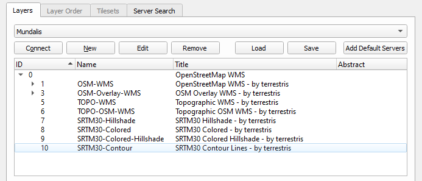

WMS, short for web map service, is a popular way of publishing maps by professional GIS software (and seldomly used by non-GISers). This format is similar to map tiles, but more generic and not so well optimized for use in web maps. A WMS image is defined by the coordinates of its corners - a calculation that Maplair does under the hood.
TMS stands for tiled map service, and is a map tiling standard more focused on web maps, very similar to the map tiles that Maplair expects in a TileLayer.
WMTS, for web map tile service, is the standard protocol for map tiles and serves map tiles directly usable in a TileLayer.
WMS in Maplair
When somebody publishes a WMS service, most likely they link to something called a GetCapabilities document. For this tutorial, we’ll use the WMS offered by Mundialis at http://ows.mundialis.de/services/service? . The service capabilities are described at the following URL:
http://ows.mundialis.de/services/service?request=GetCapabilities
Maplair does not understand WMS GetCapabilities documents. Instead, you have to create a WMSTileLayer layer, provide the base WMS URL, and specify whatever WMS options you need.
The base WMS URL is simply the GetCapabilities URL, without any parameters, like so:
http://ows.mundialis.de/services/service?
And the way to use that in a Maplair map is simply:
const map = new MaplairMap(mapDiv, mapOptions);
const wmsLayer = new WMSTileLayer('http://ows.mundialis.de/services/service?', wmsOptions).addTo(map);
An instance of WMSTileLayer needs at least one option: layers. Be careful, as the concept of “layer” in Maplair is different from the concept of “layer” in WMS!
WMS servers define a set of layers in the service. These are defined in the GetCapabilities XML document, which most times is tedious and difficult to understand. Usually it’s a good idea to use software such as QGIS to see what layers are available in a WMS server to see the layer names available:

We can see that the Mundialis WMS has a WMS layer named TOPO-OSM-WMS with a basemap. Let’s see how it looks:
const wmsLayer = new WMSTileLayer('http://ows.mundialis.de/services/service?', {
layers: 'TOPO-OSM-WMS'
}).addTo(map);
| See this example stand-alone. |
Or we can try the SRTM30-Colored-Hillshade WMS layer:
const wmsLayer = new WMSTileLayer('http://ows.mundialis.de/services/service?', {
layers: 'SRTM30-Colored-Hillshade'
}).addTo(map);
| See this example stand-alone. |
The layers option is a comma-separated list of layers. If a WMS service has defined several layers, then a request for a map image can refer to more than one layer.
For the example WMS server we’re using, there is a TOPO-WMS WMS layer showing the world topography, and a OSM-Overlay-WMS WMS layer showing the names of places. The WMS server will compose both layers in one image if we request both, separated with a comma:
const topographyAndPlaces = new WMSTileLayer('http://ows.mundialis.de/services/service?', {
layers: 'TOPO-WMS,OSM-Overlay-WMS'
}).addTo(map);
Note this will request one image to the WMS server. This is different than creating a WMSTileLayer for the topography, another one for the places, and adding them both to the map. In the first case, there is one image request and it’s the WMS server who decides how to compose (put on top of each other) the image. In the second case, there would be two image requests and it’s the Maplair code running in the web browser who decides how to compose them.
If we combine this with the layers control, then we can build a simple map to see the difference:
const basemaps = {
Topography: new WMSTileLayer('http://ows.mundialis.de/services/service?', {
layers: 'TOPO-WMS'
}),
Places: new WMSTileLayer('http://ows.mundialis.de/services/service?', {
layers: 'OSM-Overlay-WMS'
}),
'Topography, then places': new WMSTileLayer('http://ows.mundialis.de/services/service?', {
layers: 'TOPO-WMS,OSM-Overlay-WMS'
}),
'Places, then topography': new WMSTileLayer('http://ows.mundialis.de/services/service?', {
layers: 'OSM-Overlay-WMS,TOPO-WMS'
})
};
new LayersControl(basemaps).addTo(map);
basemaps.Topography.addTo(map);
Change to the “Topography, then places” option, so you can see the places “on top” of the topography, but the WMS server is clever enough to display building labels on top of that. It’s up to the WMS server how to compose layers when asked for many.
| See this example stand-alone. |
Notes to GIS Users of WMS Services
From a GIS point of view, WMS handling in Maplair is quite basic. There’s no GetCapabilities and no GetFeatureInfo support, but getLegendUrl() returns the URL of a legend.
WMSTileLayer has extra options, which can be found in Maplair’s API documentation. Any option not described there will be passed to the WMS server in the getImage URLs.
Also note that Maplair supports very few coordinate systems: CRS:3857, CRS:3395 and CRS:4326 (See the documentation for CRS). If your WMS service doesn’t serve images in those coordinate systems, extend CRS with a projection of your own, e.g. based on Proj4js (the Leaflet plugin Proj4Leaflet doesn’t work with Maplair). Other than that, just use the right CRS when initializing your map, and any WMS layers added will use it:
const map = new MaplairMap('map', {
crs: EPSG4326
});
const wmsLayer = new WMSTileLayer('http://ows.mundialis.de/services/service?', {
layers: 'TOPO-OSM-WMS'
}).addTo(map);
| See this example stand-alone. |
TMS in Maplair
Maplair doesn’t have explicit support for TMS services, but the tile naming structure is so similar to the common TileLayer naming scheme, that displaying a TMS service is almost trivial.
Let’s consider a TMS server with the following endpoint:
http://base_url/tms/1.0.0
Checking the MapCache help about TMS and the TMS specification you can see that the URL for a map tile in TMS looks like:
http://base_url/tms/1.0.0/ {tileset} / {z} / {x} / {y} .png
To use the TMS services as a TileLayer, we can check the capabilities document (the same as the base endpoint, in our case http://base_url/tms/1.0.0) to see what tilesets are available, and build our base URLs:
http://base_url/tms/1.0.0/{example_layer}@png/{z}/{x}/{y}.png
And use the tms:true option when instantiating the layers, like so:
const tms_example = new TileLayer('http://base_url/tms/1.0.0/example_layer@png/{z}/{x}/{y}.png', {
tms: true
}).addTo(map);
In Maplair you also have the option to use {-y} in the URL instead of a tms: true option, e.g.:
const layer = new TileLayer('http://base_url/tms/1.0.0/tileset/{z}/{x}/{-y}.png');
The tms: true option or {-y} are needed because the origin of coordinates of vanilla TileLayers is the top left corner, so the Y coordinate goes down. In TMS, the origin of coordinates is the bottom left corner so the Y coordinate goes up.
Besides the difference in the y coordinate and the discovery of tilesets, TMS services serve tiles exactly in the way that TileLayer expects.